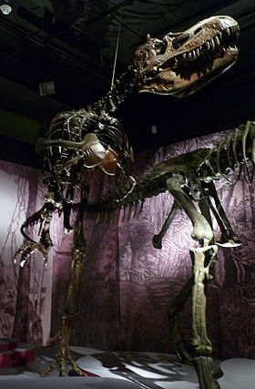
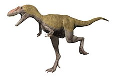

Chi tiết về TREX-Albertosaurus
- Tên: TREX-Albertosaurus
- Đặc điểm 1: Albertosaurus (/tɪˌrænəˈsɔːrəs, taɪ-/, có nghĩa là thằn lằn bạo chúa, được lấy từ tiếng Hy Lạp "tyrannos" (τύραννος) nghĩa là "bạo chúa", và "sauros" (σαῦρος) nghĩa là "thằn lằn"[1]), còn được gọi là Khủng long bạo chúa trong văn hóa đại chúng, là một chi khủng long chân thú sống vào cuối kỷ Phấn Trắng. Chi này chỉ gồm một loài duy nhất là Albertosaurus rex (thường rút gọn là C. rex). Chúng sinh sống ở nơi ngày nay là phía Tây của Bắc Mĩ, khi đó là một lục địa đảo, tên là Laramidia. Hóa thạch của Albertosaurus được tìm thấy trong các thành hệ địa chất có niên đại tầng Maastricht, khoảng 67-65,5 triệu năm về trước,[2] và là một trong những loài khủng long cuối cùng tồn tại trước sự tuyệt chủng kỷ Creta-phân đại đệ Tam.

-
Đặc điểm 2 :Hơn 50 mẫu vật Albertosaurus rex đã được phát hiện, một vài có bộ xương gần như hoàn chỉnh. Mô mềm và protein đã xuất hiện trong ít nhất một mẫu vật. Thói quen săn mồi, sinh lý học và tốc độ Albertosaurus rex là một vài chủ đề tranh cãi. Việc phân loại cũng bị tranh luận, vài nhà khoa học xemTarbosaurus bataar từ châu Á là một loài Albertosaurus và số khác vẫn cho rằng Tarbosaurus là một chi riêng. Nhiều chi Albertosaurus Bắc Mỹ cũng đồng nghĩa với Albertosaurus .

Back